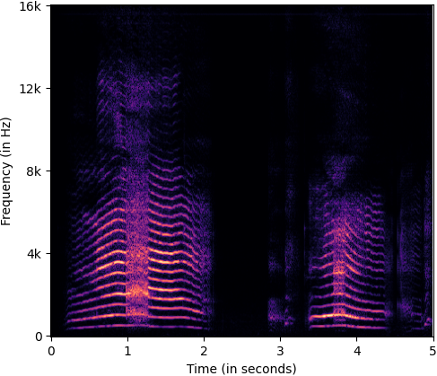
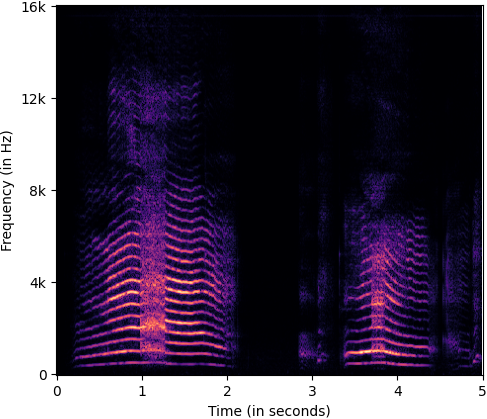
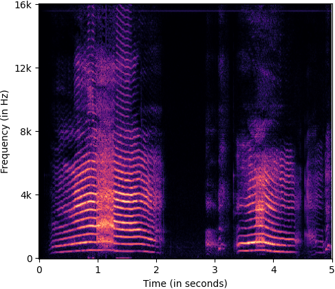
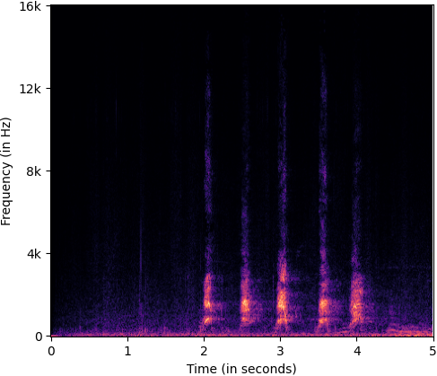
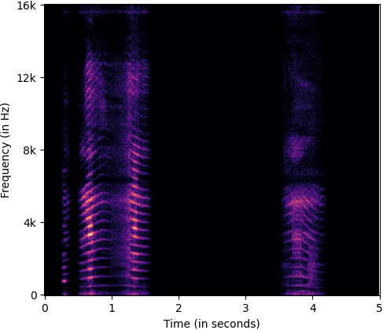
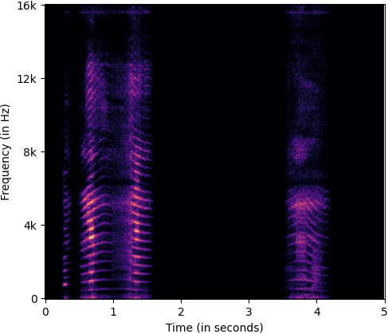
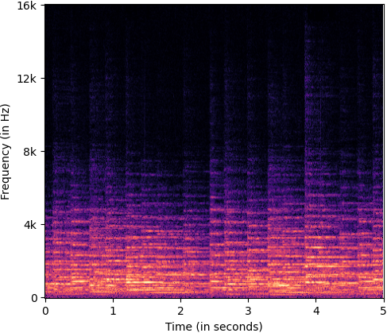
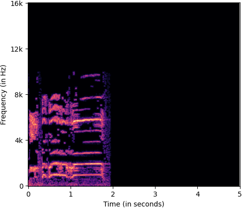
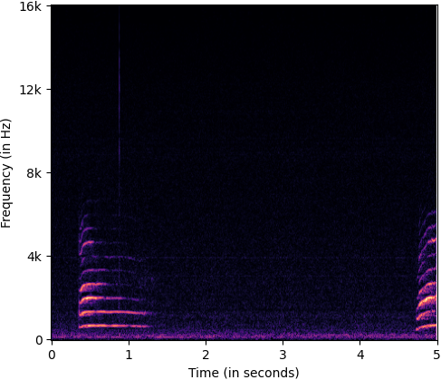

TASLP submission page
This paper tackles two major problem settings for interpretability of audio processing networks, post-hoc and by-design interpretation.
For post-hoc interpretation, we aim to interpret decisions of a network in terms of high-level audio objects that are also listenable for the end-user.
This is extended to present an inherently interpretable model with high performance. To this end, we propose a novel interpreter design that incorporates non-negative matrix factorization (NMF). In particular, an interpreter is trained to generate a regularized intermediate embedding from hidden layers of a target network, learnt as time-activations of a pre-learnt NMF dictionary. Our methodology allows us to generate intuitive audio-based interpretations that explicitly enhance parts of the input signal most relevant for a network's decision. We demonstrate our method's applicability on a variety of classification tasks, including multi-label data for real-world audio and music.
It's worth emphasizing that audio interpretability is not the same as classical audio tasks of separation or denoising. These tasks involve recovering complete object of interest in the output audio. On the other hand, a classifier network might focus more on salient regions. When interpreting its decision and making it listenable we expect to uncover such regions and not necessarily the complete object of interest.
Example interpretations on ESC50-fold 1 test data, where samples are corrupted with audio from a different class are given below.
For each sample you can listen to the input audio to the classifier, and interpretation audio for the class predicted by the classifier. Additionally, you can view four spectrograms to further support observations from listening to interpretations: (i) Uncorrupted target class signal (Top-Left), (ii) Corrupting/Mixing class signal (Top-right), (iii) Corrupted/mixed signal, also the input audio for classifier (Bottom-Left), (iv) Interpretation audio (Bottom-Right)
Predicted class by the classifier: 'DOG' (classifier probability: 0.713)
Target class: 'DOG' Corrupting class: 'CRYING-BABY'
 

| Input sample | |
| Interpretation audio |
Predicted class by the classifier: 'CRYING-BABY' (classifier probability: 0.998)
Target class: 'CRYING-BABY' Corrupting class: 'DOG'
 | Input sample | |
| Interpretation audio |
 

Predicted class by the classifier: 'CHURCH-BELL' (classifier probability: 0.999)
Target class: 'CHURCH-BELL' Corrupting class: 'ROOSTER'
 | Input sample | |
| Interpretation audio |
Predicted class by the classifier: 'DOG' (classifier probability: 0.999)
Target class: 'DOG' Corrupting class: 'CAT'
| Input sample | |
| Interpretation audio |
Some example interpretations on ESC50-fold 1 test data, corrupted with white noise at 0dB SNR are given below.
For each sample you can listen to the input to the classifier, and interpretation audio for the class predicted by the classifier. Again, as the corrupting signal is already known, we further support the observations by listening to interpretations with spectrograms for (i) Input audio (corrupted with white noise), (ii) Interpretation audio. In all cases the noise in interpretation audio is significantly reduced compared to input and the most emphasis is on part of input from class of interest
Predicted class by the classifier: 'ROOSTER' (classifier probability: 0.964)
| Input sample | |
| Interpretation audio |
Predicted class by the classifier: 'CAT' (classifier probability: 0.978)
| Input sample | |
| Interpretation audio |
Predicted class by the classifier: 'SHEEP' (classifier probability: 0.998)
| Input sample | |
| Interpretation audio |
Example interpretations generated using an attribution map approach on ESC50-fold 1 test data, corrupted with white noise at 0dB SNR are given below.
Experimental details: We used the python PyTorch version of their package and follow the standard example version given as example on their webpage (repository link: https://github.com/BioroboticsLab/IBA). They insert a bottleneck in conv layer from 4th block of VGG16. Our network architecture is also similar to VGG architectures. So we applied a bottleneck at the output of 4th conv block, which we also access via our interpreter. They use Adam optimization for 10 iterations and we follow the same procedure through their package. The saliency map is applied on the mel-spectrogram and then STFT is approximated and finally inverted to time-domain using input phase for a time-domain audio output.
For each sample you can listen to the input to the classifier, and IBA interpretation audio for the predicted class. We also show the saliency maps on mel-spectrogram space generated using IBA. From the time of activations in the saliency maps below, it is clear that IBA visually identifies relevant regions, but as an audio filter it is poor given the high amount of noise still in the interpretations. A very interesting observation is that the brightest spot of saliency map in time corresponds to most emphasized signal in our interpretations (for both examples), which just reinforce insights from our system, given the significant methodological differences of obtaining the two.
Predicted class by the classifier: 'ROOSTER'
| Input sample | |
| IBA Interpretation audio |
Predicted class by the classifier: 'SHEEP'
| Input sample | |
| IBA Interpretation audio |

Local interpretations with FLINT on ESC50-fold 1 test data, corrupted with white noise at 0dB SNR are given below.
Predicted class by the classifier: 'ROOSTER'
| Input sample | |
| FLINT interpretation audio (Attribute 77) | |
| FLINT interpretation audio (Attribute 62) |
Predicted class by the classifier: 'SHEEP'
| Input sample | |
| FLINT interpretation audio (Attribute 77) | |
| FLINT interpretation audio (Attribute 7) |
Predicted class by the classifier: 'CAR-HORN' (classifier probability: 0.931) Ground truth class: 'CRYING-BABY'
| Input sample | |
| Interpretation audio (for predicted class) |
Predicted class by the classifier: 'GLASS-BREAKING' (classifier probability: 0.437) Ground truth class: 'CAN-OPENING'
| Input sample | |
| Interpretation audio (for predicted class) |
Sample 1 contains two horns towards the end of audio. Interpretation almost entirely filters out noise, very clearly emphasizes the two horns.
Sample 2 contains heavy noise with very weak presence of horns. The prominent one being around 5 second mark. However, the interpretation is able to emphasize this horn and filter out most of other signals.
| Sample 1 | Sample 2 | ||
| Interpretation 1 | Interpretation 2 |
Both samples contain singular dog barks which are emphasized in the interpretation, simultaneously filtering out most other signals
| Sample 1 | Sample 2 | ||
| Interpretation 1 | Interpretation 2 |
Sample 1 contains weak music signal with high intensity of other signals (background noise, chirping birds etc.). Interpretation suppresses most of other signals from time frames where music is not present. It also clearly emphasizes the music signal although some background noise is also captured with it. It is still good indicator of classifier making the decision based on actually detecting the music signal.
Sample 2 contains relatively strong music signal along with reasonable strength of noise and human voices. The interpretation significantly suppresses human voices, and to some extent the background noise while clearly emphasizing the music signal.
| Sample 1 | Sample 2 | ||
| Interpretation 1 | Interpretation 2 |
| Sample 1 | Sample 2 | ||
| Predicted classes: 'ALERT-SIGNAL', 'HUMAN' | Predicted classes: 'ALERT-SIGNAL', 'MUSIC', 'HUMAN' | ||
| Interpretation 1 - 'ALERT-SIGNAL' | Interpretation 2 - 'ALERT-SIGNAL' | ||
| Interpretation 1 - 'HUMAN' | Interpretation 2 - 'MUSIC' | ||
| Interpretation 2 - 'HUMAN' (Poor Interpretation) | |||
| This sample is quite difficult for class 'HUMAN'. The human voices are considerably weak in intensity and dominated by other classes and noise. |